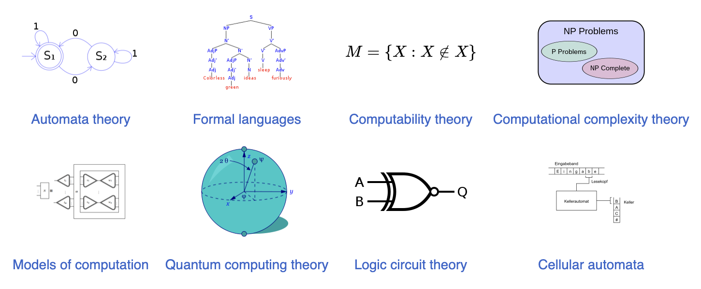
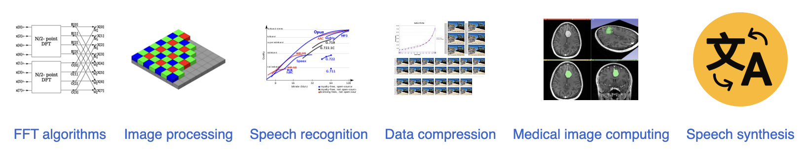
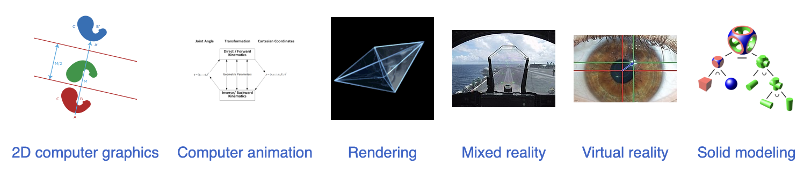

Computer science is the study of computation, information, and automation. Computer science spans theoretical disciplines (such as algorithms, theory of computation, and information theory) to applied disciplines (including the design and implementation of hardware and software). Though more often considered an academic discipline, computer science is closely related to computer programming.
Algorithms and data structures are central to computer science. The theory of computation concerns abstract models of computation and general classes of problems that can be solved using them. The fields of cryptography and computer security involve studying the means for secure communication and for preventing security vulnerabilities. Computer graphics and computational geometry address the generation of images. Programming language theory considers different ways to describe computational processes, and database theory concerns the management of repositories of data. Human–computer interaction investigates the interfaces through which humans and computers interact, and software engineering focuses on the design and principles behind developing software. Areas such as operating systems, networks and embedded systems investigate the principles and design behind complex systems. Computer architecture describes the construction of computer components and computer-operated equipment. Artificial intelligence and machine learning aim to synthesize goal-orientated processes such as problem-solving, decision-making, environmental adaptation, planning and learning found in humans and animals. Within artificial intelligence, computer vision aims to understand and process image and video data, while natural language processing aims to understand and process textual and linguistic data.
The fundamental concern of computer science is determining what can and cannot be automated. The Turing Award is generally recognized as the highest distinction in computer science.
According to Peter Denning, the fundamental question underlying computer science is, "What can be automated? Theory of computation is focused on answering fundamental questions about what can be computed and what amount of resources are required to perform those computations. In an effort to answer the first question, computability theory examines which computational problems are solvable on various theoretical models of computation. The second question is addressed by computational complexity theory, which studies the time and space costs associated with different approaches to solving a multitude of computational problems.
The famous P = NP? problem, one of the Millennium Prize Problems,[59] is an open problem in the theory of computation.
Information theory, closely related to probability and statistics, is related to the quantification of information. This was developed by Claude Shannon to find fundamental limits on signal processing operations such as compressing data and on reliably storing and communicating data.[60] Coding theory is the study of the properties of codes (systems for converting information from one form to another) and their fitness for a specific application. Codes are used for data compression, cryptography, error detection and correction, and more recently also for network coding. Codes are studied for the purpose of designing efficient and reliable data transmission methods.
Data structures and algorithms are the studies of commonly used computational methods and their computational efficiency.
Computer graphics is the study of digital visual contents and involves the synthesis and manipulation of image data. The study is connected to many other fields in computer science, including computer vision, image processing, and computational geometry, and is heavily applied in the fields of special effects and video games.
Information can take the form of images, sound, video or other multimedia. Bits of information can be streamed via signals. Its processing is the central notion of informatics, the European view on computing, which studies information processing algorithms independently of the type of information carrier – whether it is electrical, mechanical or biological. This field plays important role in information theory, telecommunications, information engineering and has applications in medical image computing and speech synthesis, among others. What is the lower bound on the complexity of fast Fourier transform algorithms? is one of unsolved problems in theoretical computer science.
Software engineering is the study of designing, implementing, and modifying the software in order to ensure it is of high quality, affordable, maintainable, and fast to build. It is a systematic approach to software design, involving the application of engineering practices to software. Software engineering deals with the organizing and analyzing of software—it does not just deal with the creation or manufacture of new software, but its internal arrangement and maintenance. For example software testing, systems engineering, technical debt and software development processes.